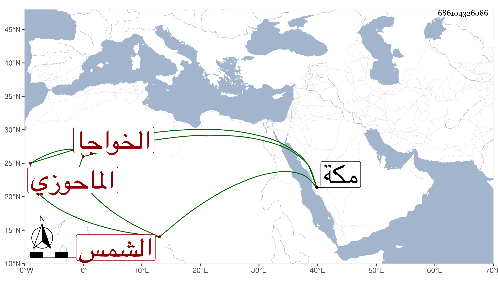

0902Sakhawi.DawLamic.ITO20230111-ara1.EIS1600.686104326086
Biography ID: 686104326086
420
محمد الخواجا الشمس الماحوزي أحد تجار الكارم وصاحب القاعة المجاورة لجامع الأزهر والجوهرية والناس يتشاءمون بها . كان ممن اختص بالمؤيد ويتكلم على الجامع بطريق النيابة عن النظار فكان يحرج على الناس في الدخول بالنعال بدون ساتر فيما بلغني بل وسمعت أنه أزال الكراسي المعدة للمصاحف وغيرها ومنه أنه كان يدور فيه ومعه عصا لردع من لعله يخالفه وقاسى المجاورون منه شدة فكانوا لذلك يتقصدونه بالمكروه بحيث أنه كان يكتب له أوراق فيها بقلم غليظ لا حول ولا قوة وتلصق إما بمكان جلوسه أو بطريقه لحول يسير كان بعينه واستفتى عليهم في ذلك فكتب له شيخنا لا حول كنز من كنوز الجنة ، وحج مرارا وأخبرني من شاهده في سنة قل الظهر فيها وهو وعياله بالطريق ومحفته بجانبه لا يجد ما يحملهم عليها مع ضخامته مات في ربيع الأول سنة إحدى وخمسين بمكة رحمه الله وعفا عنه .
